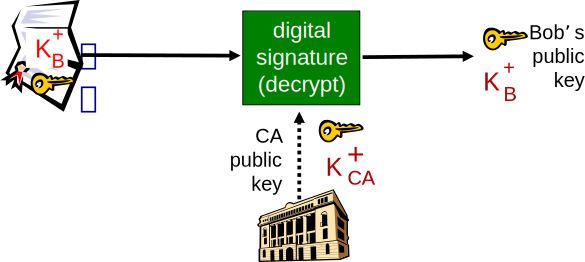
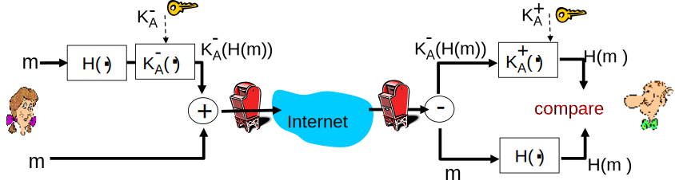

Aula 15 - Segurança: Certificados, Diffie-Hellman, E-mail Seguro
Diego Passos
Universidade Federal Fluminense
Redes de Computadores II
Na Última Aula (I)...
Autenticação: Objetivo.
Provar que as
partes são quem afirmam ser
.
Autenticação: dificuldades.
Atacante pode
forjar identidade
.
Atacante pode
forjar endereço IP
.
Atacante pode
repetir pacotes legítimos enviados
.
Mesmo criptografados.
Autenticação:
nonce
.
Número
aleatório
que “não se repete”.
Enviado como um
desafio
.
“Prove sua identidade
cifrando o nonce
”.
Criptografia simétrica ou de chave pública.
Ainda vulnerável a ataque do tipo
man-in-the-middle
.
Na Última Aula (II)...
Integridade: objetivo.
Ser capaz de
verificar
se mensagem foi
alterada pelo atacante
.
Bytes foram removidos, adicionados ou alterados.
Integridade: abordagens.
Enviar mensagem e versão criptografada com chave privada.
Funciona, mas tem alto custo computacional.
Alternativa: assinatura digital.
Enviar mensagem e
resumo criptográfico cifrado
com a chave privada.
Resumo é
pequeno, irreversível
e muda bastante com alterações na mensagem.
Requer criptografia.
Alternativa: MAC.
Message Authentication Code
.
Usa
segredo compartilhado
.
Mas apenas
concatena
mensagem e segredo.
O MAC é o
hash
desta concatenação.
MAC é mais leve, mas assinatura digital provê automaticamente identidade do transmissor.
Relembrando: Problema de Segurança do ap5.0
Ataque do tipo
man-in-the-middle
:
Trudy se passa por Alice (para Bob) e por Bob (para Alice).
Certificação de Chave Pública (I)
Motivação: Trudy faz “pegadinha da pizza” com Bob:
Trudy cria um e-mail de pedido:
Cara Pizzaria, por favor me entregue 4 pizzas de Pepperoni. Obrigado, Bob.
Trudy assina pedido com a sua chave privada.
Trudy envia pedido a pizzaria.
Trudy envia sua chave pública para a pizzaria, mas afirmando ser a chave pública de Bob.
Pizzaria confere assinatura e, então, entrega as 4 pizzas para Bob.
Bob sequer gosta de pizza de pepperoni.
Certificação de Chave Pública (II)
Nos dois exemplos anteriores, o uso de criptografia de chave pública
não
impediu ataques.
Motivo: método de distribuição de chaves.
Chave pública foi “entregue” pelo próprio atacante.
Alice e pizzaria simplesmente aceitaram as chaves como sendo verdadeiras.
Não realizaram nenhum tipo de
autenticação
da chave.
Mas como Alice e a pizzaria poderiam verificar a autenticidade da chave pública de Bob?
Ideia: analogia com a vida real.
Recebemos um documento (
e.g.
, um contrato) assinado por um individuo.
Como determinamos que a assinatura não é falsa?
Podemos utilizar um cartório: reconhecimento de firma.
Cartório “certifica” que a assinatura é verdadeira.
Autoridades Certificadoras (I)
Certification Authority (CA)
:
mapeia chaves públicas a entidade particular E.
E (pessoa, roteador) registra sua chave pública com a CA.
E provê “prova de identidade” à CA.
CA cria certificado ligando E a sua chave pública.
Certificado contém chave pública de E assinada digitalmente pela CA — CA afirma “esta é a chave pública de E”.
Autoridades Certificadoras (II)
Quando Alice quer a chave pública de Bob:
Obtém o certificado de Bob (com Bob ou por qualquer outro meio).
Aplica a chave pública da CA ao certificado do Bob, obtém a chave pública de Bob.

Autoridades Certificadoras (III)
Solução baseada no princípio da
terceira parte confiável
.
Ao receber um certificado, Alice
confia
que a chave de Bob é legítima porque
confia na autoridade certificadora
.
Assumindo, é claro, que Alice seja capaz de
verificar a assinatura
do certificado.
Diferente da chave pública sozinha, Alice pode receber o certificado diretamente da outra parte.
Graças a
verificabilidade da autenticidade
do certificado.
Atacante pode até enviar um certificado falso, mas Alice
deve
ser capaz de detectar.
Certificados Raiz
Mas... Como Alice obtém a chave pública da CA?
Parece que apenas “mudamos o problema de lugar”.
Sim e não.
De fato, Alice ainda precisa obter de forma segura o certificado da CA.
Simplesmente se conectar à CA, pedindo a chave pública pela rede, traz os mesmos problemas que tínhamos anteriormente.
Por outro lado, há (relativamente)
poucas CAs
no mundo.
Algumas poucas CAs certificam um enorme número de entidades na Internet.
Logo, a
escala do problema
é menor.
Solução típica:
Software
usado para comunicação segura (
e.g.
, o browser) já traz conjunto de
certificados raiz
.
Certificados contendo chaves públicas de CAs.
Implicitamente, clientes
assumem
que estes certificados são legítimos.
Hierarquia de Certificados
Verificação de um certificado não é necessariamente feita de forma “direta”.
i.e.
, pode ser necessário verificar uma
cadeia
de certificados.
Exemplo:
Bob envia seu certificado assinado pela CA
1
.
Obtemos a chave pública da CA
1
através do seu certificado, assinado pela CA
2
.
Obtemos a chave pública da CA
1
através do seu certificado, assinado pela CA
3
.
...
Obtemos a chave pública da CA
n-1
através do seu certificado, assinado pela CA
n
.
Possuímos um certificado
raiz
da CA
n
no qual confiamos
implicitamente
.
Certificados: Campos Importantes
Além da informação da chave pública e da assinatura, certificados contêm:
Número de série.
Descrição dos algoritmos usados (
e.g.
, para a assinatura digital).
Identificação do emissor.
Identificação da entidade certificada.
Validade
(certificado não deve ser aceito antes/depois de certa data).
...
Certificados: Revogações
Uma CA pode
revogar
um certificado por várias razões. Exemplos:
A entidade certificada foi (ou pode ter sido) comprometida.
A própria CA foi (ou pode ter sido) comprometida.
Certificado foi suplantado por outro.
...
Além de verificar assinatura digital do certificado (ou cadeia de certificados), cliente deve verificar ele não foi revogado.
Solução mais tradicional: CRL.
Certificate Revocation List
(lista de revogação de certificados).
Documento emitido periodicamente pelas CAs.
Assinado digitalmente pela CA.
Alternativa mais recente: OCSP.
Online Certificate Status Protocol
.
Cliente requisita
status
de revogação do certificado.
PKI:
Public Key Infrastructure
Note nesta solução para distribuição de chaves públicas, as partes que desejam se comunicar não são
suficientes
.
São necessários outros componentes, entidades.
Como as CAs, os certificados raízes, etc.
Em outras palavras, solução requer uma
infraestrutura
.
Uso de certificados digitais e CAs para gerenciamento/distribuição de chaves públicas define uma PKI.
Public Key Infrastructure
, ou Infraestrutura de Chave Pública
Diffie-Hellman
Estabelecimento de Chaves Compartilhadas (I)
Há algumas aulas atrás, discutimos as
diferenças
entre criptografia de chave pública e de chave simétrica.
Em particular, vimos que a criptografia de chave simétrica tem
menor complexidade computacional
.
i.e.
, cifrar/decifrar mensagens é “mais rápido”.
Resultado:
Criptografia de chave simétrica é mais usada para confidencialidade.
Criptografia de chave pública ainda é extremamente útil, mas é mais usada para outros objetivos.
e.g.
, assinaturas digitais, autenticação.
Problema: como estabelecer uma chave simétrica secreta entre duas partes?
Complicador: chaves simétricas são geralmente
chaves de sessão
,
i.e.
, mudam a cada nova sessão de comunicação.
Estabelecimento de Chaves Compartilhadas (II)
Uma opção (bastante comum) é a utilização de criptografia de chave pública para o estabelecimento de uma chave simétrica.
e.g.
, Alice cria uma chave de sessão aleatória e a cifra com a chave pública de Bob.
Alice envia chave de sessão cifrada para Bob.
Bob usa sua chave privada para decifrar chave de sessão.
Alice e Bob passam a usar criptografia de chave simétrica.
Problema: Alice precisa conhecer chave pública de Bob.
Sabemos resolver isso através de uma PKI.
Mas e se não tivermos acesso uma PKI?
Diffie-Hellman
Método para estabelecimento de chave secreta compartilhada através de canal não-seguro.
Não supõem qualquer tipo de conhecimento prévio das partes.
Funcionamento:
Alice e Bob definem dois números, p e g.
p é um
número primo grande
.
g deve ser uma
raiz primitiva módulo p
.
i.e.
, para todo inteiro i, coprimo com p, existe k tal que g
k
≡ i (mod p).
p e g
não são secretos
, podem ser padronizados ou mesmo enviados em texto plano pelo canal.
Alice e Bob sorteiam números aleatórios a e b, respectivamente (
devem ser mantidos em segredo!
).
Alice calcula A = g
a
mod p e envia para Bob.
Bob calcula B = g
b
mod p e envia para Alice.
Bob calcula s = A
b
mod p.
Alice calcula s = B
a
mod p.
s é a chave simétrica secreta.
Diffie-Hellman: Exemplo Numérico
Alice e Bob definem p = 11 e g = 6.
Decisão pode ser padronizada ou baseada em troca de mensagens.
Potencial atacante pode conhecer p e g
sem prejuízo
de segurança.
Alice e Bob sorteiam valores aleatórios a e b, respectivamente.
a = 3.
b = 4.
Alice e Bob calcular os valores A e B, respectivamente.
A = g
a
mod p = 6
3
mod 11 = 7.
B = g
b
mod p = 6
4
mod 11 = 9.
Alice e Bob transmitem A e B um para o outro.
Potencial atacante pode conhecer A e B.
Alice e Bob calculam chave compartilhada s.
Alice: s = B
a
mod p = 9
3
mod 11 = 3.
Bob: s = A
b
mod p = 7
4
mod 11 = 3.
Diffie-Hellman: Por Que Funciona?
Análise em duas partes: porque Alice e Bob chegam ao mesmo valor s e porque Trudy não consegue.
Alice e Bob
Alice calcula s = B
a
mod p.
Bob calcula s = A
b
mod p.
Mas A = g
a
mod p e B = g
b
mod p.
Logo:
Alice: s = (g
b
)
a
mod p = g
ab
mod p.
Bob: s = (g
a
)
b
mod p = g
ab
mod p.
Trudy
Suponha que conhece g, p, A e B.
Sabemos que s = g
ab
mod p.
Com as informações que possui, Trudy precisaria de a ou b.
Teoricamente, é possível calcular a (ou b) sabendo g, p e A (ou B).
Mas é computacionalmente inviável se p é um
primo grande
.
Problema do
logaritmo discreto
.
Diffie-Hellman: Ataque
Man-In-The-Middle
(I)
Vulnerabilidade do método: ataque do tipo
man-in-the-middle
.
Suponha que Trudy pode interceptar as mensagens entre Alice e Bob e trocá-las por mensagens próprias.
Alice envia A para Bob, Trudy intercepta e envia um A′ (baseado em um a′ conhecido por Trudy).
Bob envia B para Alice, Trudy intercepta e envia um B′ (baseado em um b′ conhecido por Trudy).
Alice calcula um s′ que pode ser facilmente calculado por Trudy.
Bob calcula um s′′ que pode ser facilmente calculado por Trudy.
Resultado: Trudy
conhece ambas as chaves de sessão
utilizadas por Alice e Bob.
Pode decifrar toda a comunicação criptografada.
Diffie-Hellman: Ataque
Man-In-The-Middle
(II)
Qual a utilidade do Diffie-Hellman, então?
Poderíamos simplesmente ter usado um método de criptografia de chave pública (
e.g.
, RSA).
Justificativa inicial: sem PKI, Alice não pode obter chave pública de Bob de forma segura.
Bob poderia simplesmente enviá-la pelo canal, mas ficaria susceptível ao ataque de
man-in-the-middle
.
Mas com Diffie-Hellman estamos susceptíveis de qualquer forma!
Duas razões:
Primeira: quando proposto, métodos práticos de criptografia de chave pública não eram difundidos.
Segunda: usado
em conjunto
com criptografia de chave pública, Diffie-Hellman oferece algumas vantagens.
Exemplo de Uso Atual de Diffie-Hellman: SSH (I)
Protocolo de
shell
remoto
seguro
.
Alternativa segura, por exemplo, ao telnet.
Provê confidencialidade, integridade, autenticação do cliente com o servidor e do servidor com o cliente (sob algumas hipóteses).
Dados são cifrados com criptografia de chave simétrica.
Usando uma nova chave de sessão a cada conexão.
Chave de sessão é
estabelecida usando Diffie-Hellman
(ou variantes).
Autenticação do servidor com o cliente é feita através de criptografia de chave pública.
Opcionalmente, criptografia de chave pública é usada para autenticar o usuário com o servidor.
SSH: Funcionamento Básico
Cliente abre conexão TCP para o servidor (por padrão, na porta 22).
Cliente e servidor selecionam um algoritmo de estabelecimento de chaves de uma lista de algoritmos suportados.
Diffie-Hellman ou alguma variação.
Cliente e servidor executam o algoritmo de estabelecimento de chave secreta compartilhada.
Servidor se autentica com o cliente.
Utiliza criptografia de chave pública (
e.g.
, RSA, DSA) e
hash
criptográfico para assinar chave simétrica.
Cliente autentica servidor usando sua chave pública (enviada pelo próprio servidor) para verificar assinatura.
Cliente e servidor se comunicam cifrando mensagens com a chave compartilhada.
Mensagens incluem verificações de integridade usando MAC.
SSH e Man-In-The-Middle (I)
Se o servidor envia sua chave pública, do que adianta a autenticação do ssh?
Ideia é que o cliente
conheça previamente
a chave pública do servidor.
Chave é obtida antes de
alguma forma segura
.
Neste caso, cliente não precisa
confiar
na chave que recebe pela rede.
Mas...
Na prática, isso nem sempre ocorre.
Servidor pode precisar gerar novas chaves.
e.g.
, porque o sistema foi reinstalado e chaves foram perdidas.
Ainda mais comum:
usuários não têm o cuidado
de obter a chave pública previamente.
SSH e Man-In-The-Middle (II)
Solução prática:
Servidor envia chave pública, cliente verifica se esta bate com a previamente conhecida.
Se não bate (ou se não há chave previamente conhecida), usuário é alertado.
Software
pede que usuário confirme a identidade do servidor.
Assumindo que a primeira conexão seja realizada com o servidor real
, ssh consegue garantir autenticidade.
Em resumo:
Diffie-Hellman ainda é susceptível ao ataque
man-in-the-middle
.
Mas
chave resultante
é assinada com criptografia de chave pública, permitindo detectar o ataque.
Man-in-the-middle
e outros.
SSH e Diffie-Hellman: Vantagens
Pergunta:
se dependemos da confiança na chave pública, qual é a vantagem em usar o Diffie-Hellman?
Resposta:
Diffie-Hellman provê
forward secrecy
.
Propriedade muito interessante em criptografia.
A chave usada para cifrar os dados da sessão SSH é
efêmera
Parâmetros
usados para gerá-la também.
Além disso, chave
nunca é transmitida pelo canal
(cifrada ou não).
Ainda que o atacante...
“Grave” todas mensagens cifradas/texto plano; e
Futuramente consiga
comprometer
as chaves privadas (permanentes).
... não há como
decifrar sessões passadas
.
E-mail Seguro
E-mail Seguro (I)
Alice quer enviar e-mail confidencial, m, para Bob.
Alice:
Gera aleatoriamente chave simétrica privada, K
S
Cifra mensagem com K
S
(por razões de eficiência).
Também cifra K
S
com a chave pública de Bob.
Envia ambas K
S
(m) e
\(K^{+}_{B}\left(K_S\right)\)
a Bob.
E-mail Seguro (II)
Alice quer enviar e-mail confidencial, m, para Bob.
Bob:
Usa sua chave privada para decifrar e recuperar K
S
.
Usa K
S
para decifrar K
S
(m) e recuperar m.
E-mail Seguro (III)
Alice quer prover meios de verificação da integridade e autenticidade da mensagem.

Alice assina digitalmente a mensagem.
Envia ambas a mensagem (em texto plano) e a assinatura digital.
E-mail Seguro (IV)
Alice quer prover confidencialidade, integridade e autenticidade da mensagem.
Alice usa três chaves:
sua chave privada, a chave pública de Bob e a chave simétrica recém criada.
Resumo da Aula... (I)
Certificação de chave pública: objetivo.
Garantir
autenticidade
de chaves públicas.
Certificação de chave pública: solução.
Terceira parte confiável
certifica autenticidade da chave.
CA:
Certification Authority
.
Emite um “documento”
verificável
contendo a chave.
Assinado digitalmente com a chave privada da CA.
Certificação de chave pública: verificação.
Alice
obtém certificado
de Bob.
Alice verifica assinatura digital com a
chave pública
da CA.
Alice obtém chave pública de Bob.
Certificados raiz:
Certificados
previamente conhecidos
.
Confiança implícita
na sua autenticidade.
Contém chaves públicas de CAs.
Hierarquia de Certificados:
Alice pode precisar verificar uma
cadeia
de certificados.
CA
n
certifica CA
n-1
, que certifica CA
n-2
, ..., que certifica Bob.
Certificados apresentam
validade
.
CAs podem
revogar
certificados.
PKI:
Public Key Infrastructure
.
Infraestrutura para distribuir/verificar chaves públicas.
Exemplo: CAs + Certificados.
Resumo da Aula... (II)
Diffie-Hellman:
Método para
estabelecimento seguro de chaves
compartilhadas.
Não requer
conhecimento prévio
das partes.
Partes concordam em parâmetros
não secretos
p e g.
Também enviam em texto plano A = g
a
mod p e B = g
b
mod p.
a e b são mantidos secretos.
Chave compartilhada é s = B
a
mod p = A
b
mod p.
Sem método de autenticação
, é susceptível a ataque
man-in-the-middle
.
E-mail seguro: diferentes possíveis objetivos.
Confidencialidade
: chave simétrica de sessão, cifrada com chave pública do destinatário.
Integridade e Autenticidade
: assinatura digital com chave privada.
Leitura e Exercícios Sugeridos
Certificação de chaves públicas:
Páginas 510 a 512 do Kurose (parte final da Subseção 8.3.3).
Exercício de fixação 14 do Capítulo 8 do Kurose.
Problema 14 do Capítulo 8 do Kurose.
Diffie-Hellman:
Seção 8.7.2 do Tanenbaum.
Problema 9 do Capítulo 8 do Kurose.
E-mail seguro:
Páginas 516 a 521 do Kurose (parte final da Seção 8.4).
Exercício de fixação 19 do Capítulo 8 do Kurose.
Problemas 17 e 18 do Capítulo 8 do Kurose.
Próxima Aula...
Discutiremos um dos principais protocolos de segurança utilizados na Internet.
SSL:
Secure Sockets Layer
.
Adiciona serviços de segurança no transporte de dados na Internet.
Confidencialidade.
Autenticação.
Integridade.